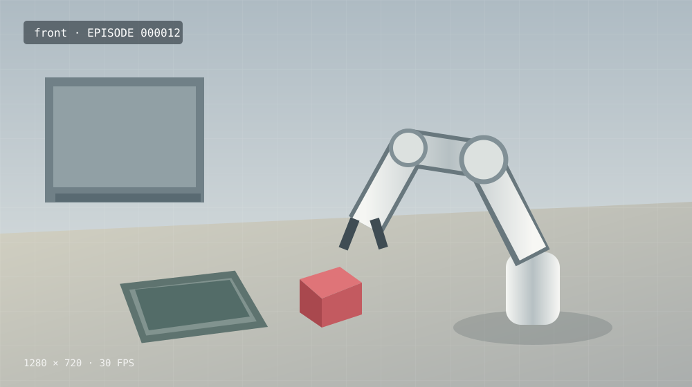

视频库
浏览多相机 Episode 视频，快速进入标注工作区

00:243 camerasepisode_000012标注中
将红色方块放入目标容器
720 帧 · 30 FPS · 1280 × 72000:243 cameras
episode_000013已标注
将红色方块放入目标容器
720 帧 · 30 FPS · 1280 × 72000:243 cameras
episode_000014待标注
将红色方块放入目标容器
720 帧 · 30 FPS · 1280 × 72000:243 cameras
episode_000015已标注
将红色方块放入目标容器
720 帧 · 30 FPS · 1280 × 72000:243 cameras
episode_000016待标注
将红色方块放入目标容器
720 帧 · 30 FPS · 1280 × 72000:243 cameras
episode_000017已标注
将红色方块放入目标容器
720 帧 · 30 FPS · 1280 × 720共 128 个视频
…
6 条/页